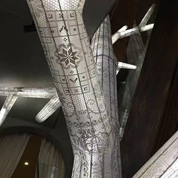
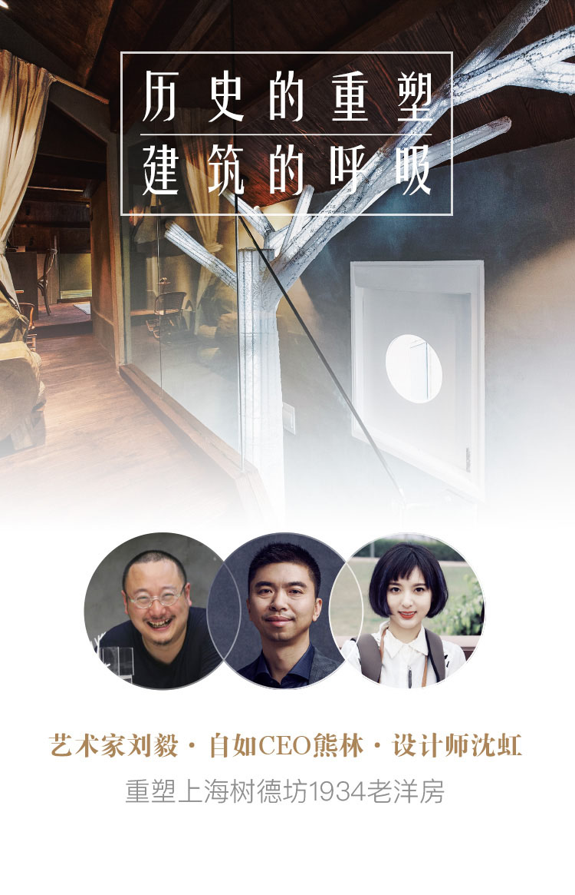
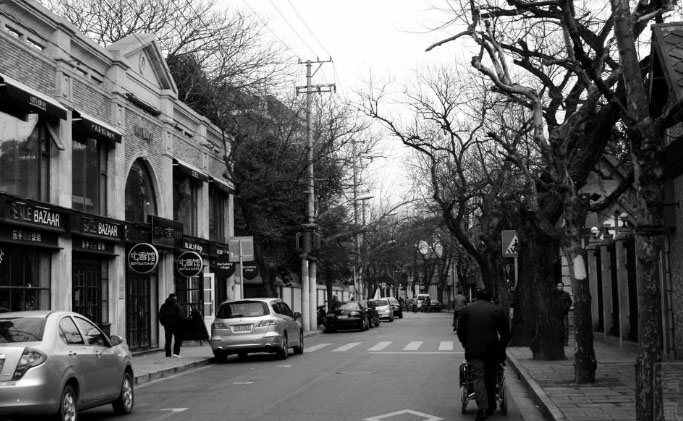
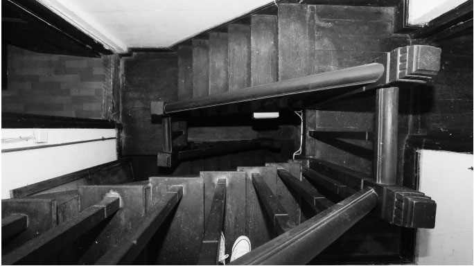
- 初遇树德坊
-
坐落于法租界的树德坊建于上世纪30年代末，是“老上海”的代表，也是现在旅行者心之向往的时髦生活方式。梧桐树掩映，充满浪漫情调及浓郁的文化气息，吸引众多文人雅士聚居于此。
或许是天生血液中流动着对美居的无限热爱，自如CEO熊林先生一直在寻觅中国真正的最美民宿。经好友推荐，熊林先生和自如上海团队得知树德坊内一栋小洋楼空置许久，欣喜不已。“这是中国的最美民宿，可以让更多人去深度了解和体会曾风花雪月、也饱经风霜的老上海。”
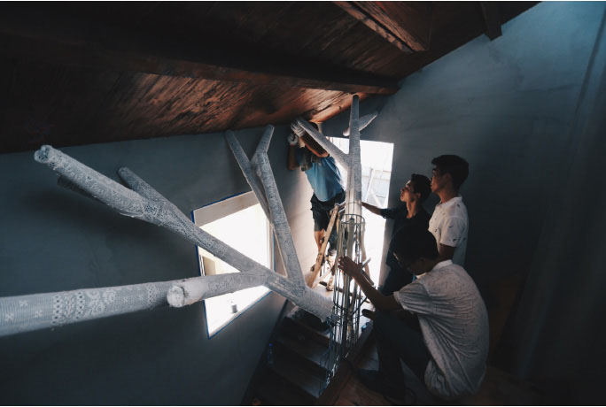
- 重塑
-
为了让树德坊的这栋洋房焕发新生命，自如民宿从全国百位设计师中挑选了拥有独立民宿品牌，极具老房改造经验的优秀设计师—沈虹。同时也荣幸邀请到在公共空间设计领域拥有丰富经验的上海艺术家、上海复旦视觉艺术学院的刘毅老师为其创作装置艺术品。自如CEO熊林先生、设计师沈虹和艺术家刘毅先生认为，这并非法租界的普通花园洋房，而是老上海人真正的居所，每一次改造，都是老建筑与人们生活方式的共同进化。重塑树德坊老洋房意味着重现年代建筑文明。而在民宿空间内创作艺术品，也是国内首次公共空间艺术与住宅空间的合作。
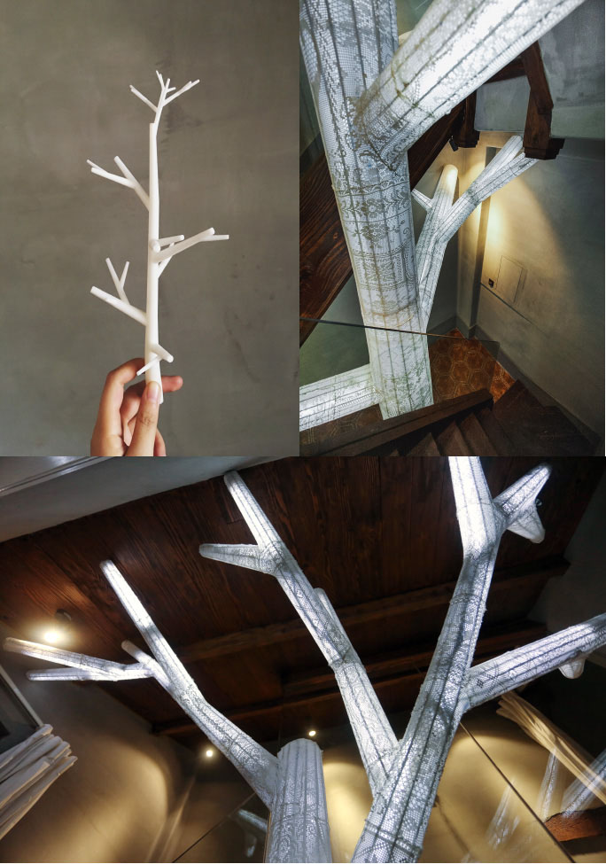
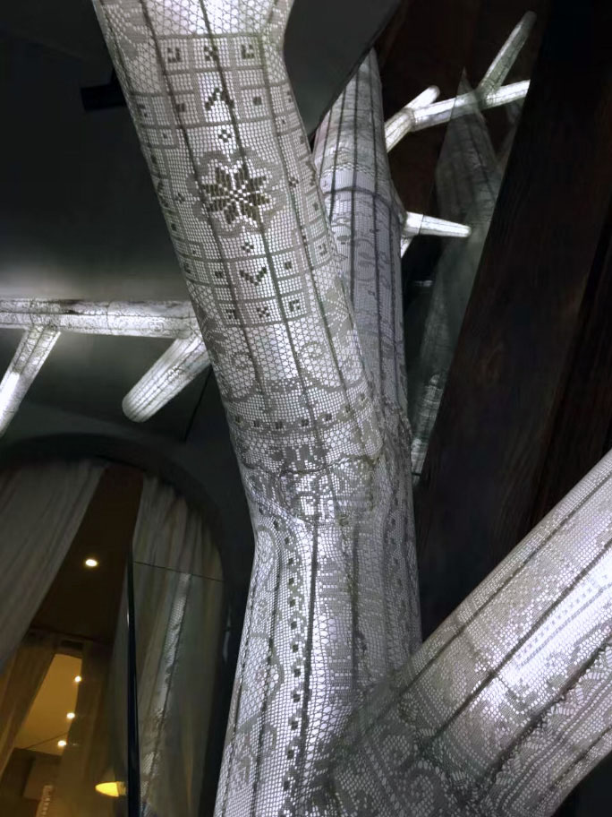
- 树德坊的树
-
在这座焕然一新的洋房里，生长着一颗“会发光、会呼吸的树”，从一楼直至三楼屋顶。这件艺术品称为《树德坊的树》，灵感来源于艺术家刘毅先生对老上海生活片段的回忆，以及对于“树”这一生命体的敬意。作品的枝干生长在建筑的各个空间中，传统钩针编织工艺花布的绚丽图案丰富了树的表皮，透过会呼吸的光与空间呢喃对话。树干内的光线是建筑的呼吸，是建筑与自然元素的交汇。通过它，可以体现建筑与自然的共生关系。此次的跨界合作，也是国内首次突破与创新。
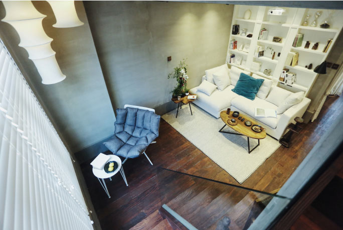
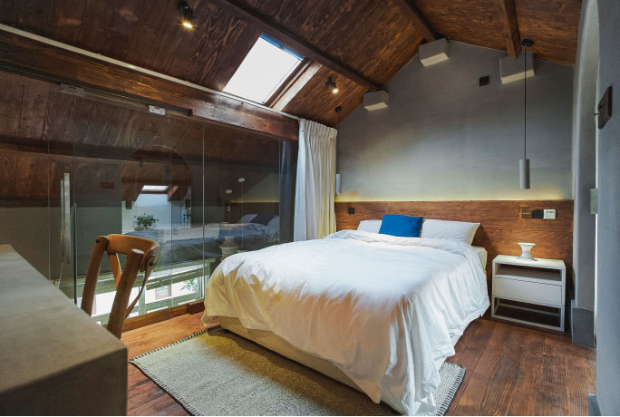
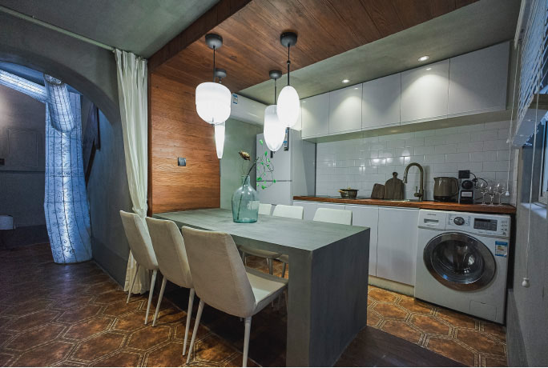
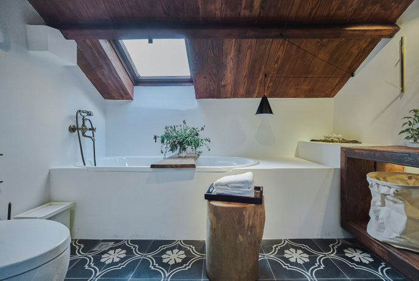
- 小城（Hamlet）
- 设计师沈虹初见这栋房子时激动的不断感叹，这才是真正老上海人的住所，将民宿做出家的味道也一直是其设计理念和灵感来源。房内的种种选择不是出于设计，而是源于生活-最大程度尊重和保留老洋房中独具韵味的部分-老梁、地板、楼梯面等。老房子虽面积小，但是内部错落有致，设计师将每层打通，形成流动的空间，卧房、客厅、露台都可以互相直通。路径之中现惊喜，空间感成为真正的奢侈品。